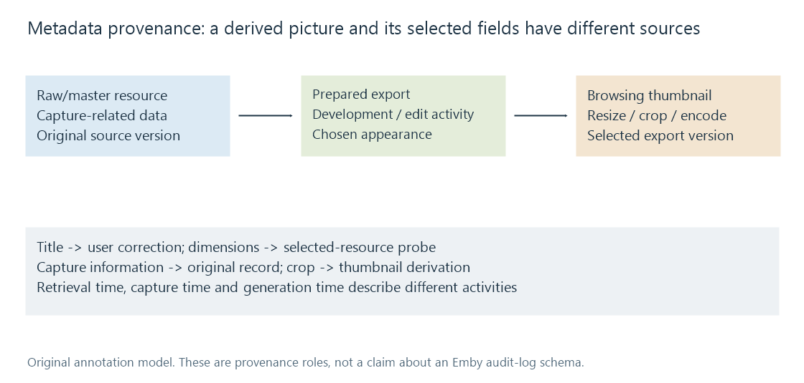

Metadata provenance
Metadata provenance records the sources and activities responsible for values or derived resources, making identity, corrections and later refresh results easier to assess.
A library can display a title that differs from the filename, an embedded tag and a provider's current title. Provenance makes that difference explainable by recording where the selected information came from and what produced it.
It answers a history question. It does not automatically decide which source should win.
Record sources at the field's scope
An invented record can have this source history:
| Field | Selected information | Source/activity |
|---|---|---|
| Display title | The Station — restored edition | A user correction |
| Video width | 1920 pixels | Probe of the selected file version |
| Release year | 2020 | A provider record for the matched work |
| Photo caption | Platform at dawn | An imported descriptive record |
Calling the entire item “provider metadata” hides that combination. A later title refresh might change only one relationship, while the technical width still belongs to the local file.
Useful annotations can include source identity, the source's entity/field, retrieval or edit time and any transformation. They should distinguish a value copied directly from one computed or translated.
This is an explanatory record model, not a claim that Emby persists every annotation shown in the table.
Derived images have a history too
Suppose a raw capture produces an edited JPEG, which then produces a browsing thumbnail.

The thumbnail's crop and colour appearance can come from the export and the later image operation. A difference from the raw preview may therefore result from the chosen development, rather than from changing a caption field.
A trace should identify which source version supplied the derivative. Retaining only the path can become ambiguous if another image replaces the file at that path.
The W3C PROV model supplies vocabulary for entities, activities and responsible agents. A practical library record can apply those ideas without implementing every part of that formal model.
Retrieval time is not the media's event time
A metadata fetch performed today can return a release date decades earlier. A thumbnail generated today can depict a capture made years ago.
Similarly, an old cached response can be read today without being newly obtained from its provider. Separate acquisition, edit, derivation and described-event times when assessing freshness.
A single “last updated” date cannot always answer all those questions.
A correction needs a source and a policy
A user may deliberately select a localized title or repair a mistaken match. Its source history explains why it differs from the next provider response.
Precedence decides how that new candidate interacts with the selected value. In Emby, documented field/item locks provide a concrete persistence mechanism, described in Metadata Manager. Those controls are selection behavior; the justification for the correction belongs to its provenance.
Keeping the two concepts distinct helps explain whether a surprising change came from a new source, a different entity match, or a changed rule for choosing among existing values.